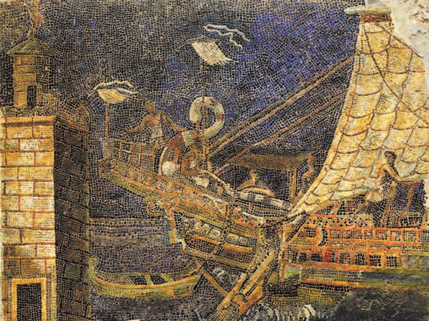
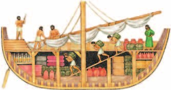
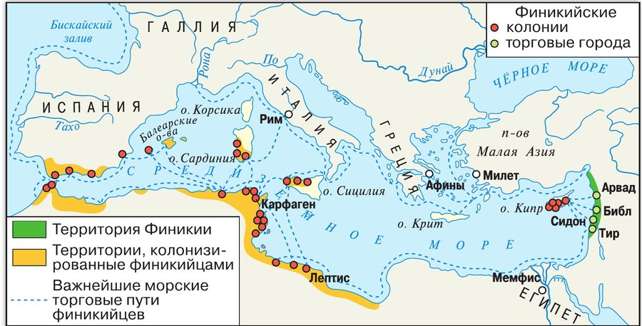
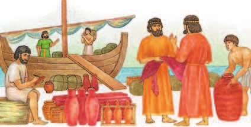
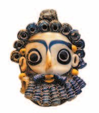
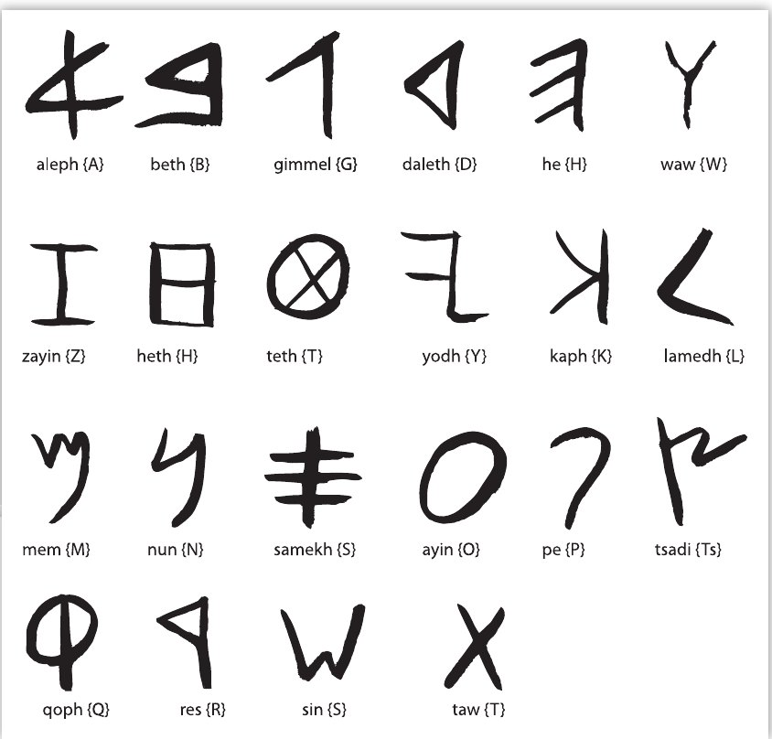

Земля между морем и горами
располагалась на восточном берегу Средиземного моря — там, где сейчас Сирия, Ливан и Израиль.
Побережье там скалистое, а полоса плодородной земли совсем узкая. Зато в удобных возникали города, где развивалось ремесло: местные мастера делали сосуды, украшения, предметы одежды.
Каждый город был самостоятельным государством. Его правитель командовал армией и флотом и собирал с населения налоги. Самыми сильными и богатыми городами были Библ, Тир и Сидон.
Финикийцы занимались морской торговлей, и торговые города приносили в казну богатства. К ним выходили сухопутные торговые пути из юго-восточной Малой Азии, Месопотамии и Северной Аравии — прибывавшие оттуда товары финикийцы везли морем дальше.
Финикия располагалась на восточном берегу Средиземного моря (на территории современных Сирии, Ливана и Израиля). Побережье этой страны скалистое, а полоса плодородной земли совсем узкая. В удобных гаванях возникали города, где развивалось ремесло. Здесь местные ремесленники изготавливали сосуды, украшения, предметы одежды.
Каждый город представлял самостоятельное государство. Его правитель командовал армией и флотом, собирал с населения налоги. Самыми сильными и богатыми городами были Библ, Тир и Сидон.
Финикийцы занимались морской торговлей. Торговые города приносили в казну богатства. К ним выходили сухопутные торговые пути из юго-восточной Малой Азии, Месопотамии, Северной Аравии, и прибывавшие оттуда товары финикийцы везли морем дальше.
- Почему торговля стала основным занятием финикийцев?
1. Финикия — узкая полоска между скалистым берегом и горами. Как это определило, чем жили её люди?
2. Каждый финикийский город был отдельным государством. Вспомни §11: где ты уже встречала такое устройство?
3. Почему сухопутные торговые пути из Малой Азии, Месопотамии и Аравии заканчивались именно в финикийских городах?

Великие мореплаватели
В конце 2-го тысячелетия до н. э. финикийцы проложили пути для морской торговли по всему Средиземному морю.
В западной его части они покупали серебро и выгодно продавали другим народам. Из Египта привозили папирус. А поскольку корабли приходили из города , то и сам материал для письма стали связывать с названием города — так родилось слово «библиотека».
Ценными товарами были кедр, росший в горах около Финикии, и изделия местных ремесленников.
Там, где финикийцы бывали постоянно, они основывали свои поселения — . Бо́льшая их часть была в западной части Средиземного моря: в Африке, Испании, на островах Сардиния и Сицилия. Самой знаменитой колонией была мощная крепость в Северной Африке.
Но ходила о финикийцах и дурная слава — как о морских разбойниках, пиратах. Они нередко похищали людей и продавали их в рабство: заманивали на корабль, обещая показать диковинные товары, а как только человек оказывался на борту, судно снималось с якоря.
В конце 2-го тысячелетия до н. э. финикийцы проложили пути для морской торговли по всему Средиземному морю. В западной его части они покупали серебро и выгодно продавали его другим народам. Из Египта финикийцы привозили папирус. Поскольку корабли приходили из города Библа, то связывали материал, на котором можно писать, с названием города, так родилось слово «библиотека». Ценными товарами были кедр, который рос в горах около Финикии, а также изделия местных ремесленников.
В местах, где финикийцы бывали постоянно, они основывали свои поселения — колонии. Бóльшая их часть находилась в западной части Средиземного моря — в Африке, Испании, на островах Сардиния, Сицилия. Самой знаменитой колонией была мощная крепость Карфаген в Северной Африке.
О финикийцах ходила и дурная слава — как о морских разбойниках, пиратах. Они нередко похищали людей и продавали их в рабство. Своих жертв финикийцы заманивали на корабль, обещая показать диковинные товары. Как только люди оказывались на корабле, он тут же снимался с якоря.

▲ Найди на карте Карфаген. Посмотри, как далеко он от Финикии.

▲ Какие товары продавали финикийские купцы?
- Какую роль играло мореходство в развитии финикийцев?
4. Почему колонии основывали в основном на западе Средиземного моря, а не рядом с домом?
5. Слово «библиотека» пришло от названия города. Как это получилось?
6. Финикийцы были и честными купцами, и пиратами, которые похищали людей. Как это уживалось в одном народе?
7. Финикийцы обогнули Африку за три года, а повторили этот путь другие мореплаватели только через две тысячи лет. О чём это говорит?
Изобретения финикийцев
Финикийцы строили парусные суда большой грузоподъёмности, способные держаться на воде даже в сильный шторм. Гребцов на судах тоже держали — попутный ветер дует не всегда.
На боевых кораблях финикийцы применяли : при атаке он пробивал борт вражеского судна.
Жители Финикии первыми научились добывать для окрашивания ткани — её получали из особого вида моллюсков. Этот промысел так их прославил, что само название «Финикия» восходит к древнегреческому «страна пурпура».
Ещё финикийцы открыли новый способ изготовления — оно получалось чистым и прозрачным. Помогал песок со средиземноморского побережья.
Легенда рассказывает так. Однажды финикийские купцы везли из Египта глыбы соды. Они остановились на берегу, где не было камней, и сложили очаг прямо из соды. На их глазах от огня сода сплавилась с песком — так открыли и само стекло, и способ его изготовления.
Финикийцы строили парусные суда большой грузоподъёмности, способные держаться на воде в сильный шторм. На судах держали и гребцов, поскольку не всегда дул попутный ветер. Финикийцы применяли на боевых кораблях таран, который при атаке пробивал борт вражеского судна.
Жители Финикии первыми научились добывать пурпурную краску для окрашивания ткани. Краску получали из особого вида моллюсков. Этот промысел так прославил финикийцев, что само название «Финикия» восходит к древнегреческому «страна пурпура».
Финикийцы открыли новый способ изготовления стекла. Оно получалось чистым и прозрачным. Такой результат достигался за счёт использования песка с побережья Средиземного моря. Легенда гласит, что однажды финикийские купцы везли из Египта глыбы соды. Они остановились на берегу, где не было камней, и для очага использовали глыбы соды. На их глазах от воздействия огня сода и песок сплавились: так были открыты и само стекло, и способ его изготовления.

- Какие изобретения финикийцев используются до сих пор?
8. Зачем на корабле держали гребцов, если был парус?
9. Название страны происходит от краски. Что это говорит о том, чем Финикия была знаменита?
10. По легенде стекло открыли случайно. Какие три вещи должны были совпасть?
Алфавит
Финикийцы много торговали и общались с другими народами. Сами они разговаривали на ханаанейском языке, а для письма использовали аккадскую клинопись.
Это создавало много трудностей: в клинописи было почти 600 знаков, а некоторые имели по нескольку значений — на её изучение уходила уйма времени.
И тогда, в конце 2-го тысячелетия до н. э., финикийцы создали новую простую систему письма. Они стали обозначать знаками не слова и слоги, а отдельные звуки речи. Записывали при этом только согласные звуки.
Позже греки, хорошо знакомые с финикийским письмом, переделали звучание в «альфа» и «бета» — отсюда и название . Греки усовершенствовали его, добавив знаки для гласных звуков.
Усовершенствованный греками финикийский алфавит стал основой и для нашего — того, которым мы пользуемся до сих пор.
Финикийцы много торговали и взаимодействовали с представителями других народов. Сами разговаривали на ханаанейском языке, а для письма использовали аккадскую клинопись. Это вызывало множество трудностей, так как для других народов изучение клинописи (в ней существовало почти 600 знаков, а некоторые имели по несколько значений) занимало большое количество времени. Тогда в конце 2-го тысячелетия до н. э. финикийцы создали новую простую систему письма.
Они стали обозначать знаками не слова и слоги, а отдельные звуки речи. При этом записывались только согласные звуки.
Позже у греков, которые были хорошо знакомы с финикийским письмом, звучание первых букв превратилось в «альфа» и «бета», отсюда и название — алфавит. Греки усовершенствовали алфавит, включив в него знаки для обозначения гласных звуков. Усовершенствованный греками финикийский алфавит станет основой уже для нашего алфавита, который используется до сих пор.

- Почему финикийскую систему письма сделали основой некоторых современных алфавитов? Чем она отличалась от письменности Месопотамии и Египта?
11. Почему клинопись была для других народов такой трудной, а финикийское письмо — лёгким?
12. Финикийцы записывали только согласные. Что добавили греки и зачем?
13. Откуда взялось само слово «алфавит»?
14. Почему простое письмо придумал именно торговый народ?
Подведём итоги
- Как природные условия Финикии отразились на занятиях её жителей?
- Объясни, что из себя представляли колонии. Где и с какой целью они создавались?
- Сравни состав общества Финикии и Месопотамии. В чём их различия? Объясни почему.
- Как ты думаешь, почему Месопотамия и Египет были едиными государствами, а финикийские города-государства оставались самостоятельными?
- Как финикийцы повлияли на развитие мореплавания?
- Какое значение имел финикийский алфавит для развития письменности?
- Представь себя финикийским мореплавателем. Опиши свой путь и впечатления от путешествия.
Прочитай список понятий: колония, алфавит, таран, стекло, Финикия. Какое понятие является общим для всех? Объясни свой ответ.
Сформулируй ответ на главный вопрос параграфа — чем славилась Финикия в древности? Приведи два-три довода.
Проверь себя
Нажимай по очереди — от самого древнего письма к нашему.
1. Почему финикийцы стали мореходами и торговцами?
2. Что такое колония?
3. От чего произошло слово «библиотека»?
4. Что такое пурпур?
5. Сколько букв было в финикийском алфавите?
6. Что добавили греки к финикийскому письму?
Расскажи вслух
Природа и города Финикии
- Восточный берег Средиземного моря; побережье скалистое, полоса плодородной земли узкая, зато удобные гавани.
- В гаванях — города-государства: Библ, Тир, Сидон; правитель командует армией и флотом, собирает налоги.
- К городам выходили сухопутные пути из Малой Азии, Месопотамии, Северной Аравии — дальше товар шёл морем.
Мореплаватели и колонии
- Конец 2-го тысячелетия до н. э. — пути по всему Средиземному морю; серебро с запада, папирус из Египта, кедр, изделия ремесленников.
- Колонии в Африке, Испании, на Сардинии и Сицилии; самая знаменитая — Карфаген.
- Добирались до Британских (Оловянных) островов, обогнули Африку за три года; но имели и славу пиратов.
Изобретения
- Суда большой грузоподъёмности, держатся в шторм; гребцы на случай безветрия; таран на боевых кораблях.
- Пурпурная краска из моллюсков — отсюда само название «страна пурпура».
- Стекло чистое и прозрачное: по легенде сода из Египта сплавилась с песком в очаге на берегу.
Алфавит
- Сначала писали аккадской клинописью: почти 600 знаков, у некоторых по нескольку значений — трудно.
- Конец 2-го тысячелетия до н. э.: 22 буквы, знак — отдельный звук речи, записывали только согласные.
- Греки добавили гласные, «алеф» и «бет» стали «альфой» и «бетой» — отсюда слово «алфавит», и от него наш.